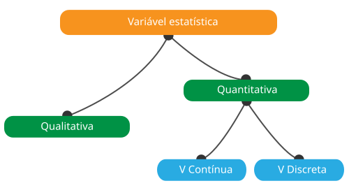
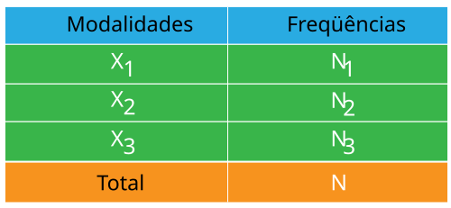

Definições dos termos
1- Estatística descritiva
é o ramo da estatística que desenvolve, quando necessário, métodos
de coleta, processamento, análise quantitativa e qualitativa de dados.
O objetivo da estatística descritiva é descrever, ou seja, resumir
ou representar, através da estatística, os dados disponíveis quando
eles são numerosos.
2- A população estatística é o conjunto de factos, indivíduos, objectos ou fenómenos a que se refere o estudo estatístico.
3- A unidade estatística é um elemento constituinte da população estatística
4- O carácter estatístico
é uma propriedade distintiva da unidade estatística de interesse.
Ex: Idade, Sexo, Religião, ...
Uma característica é
considerada quantitativa quando é mensurável e qualitativa quando não é.
5- As modalidades estatísticas
são o conjunto de possíveis valores ou situações que podem ser atribuídos
a uma característica estatística
b>Ex: Masculino / Feminino para sexo
6- A variável estatística
é um atributo que descreve uma pessoa, lugar, coisa ou idéia.
Variáveis
podem ser classificadas como qualitativas (ou seja, categóricas) ou quantitativas
(ou seja, numéricas). O reconhecimento dos diferentes tipos de variáveis é o primeiro
passo na análise de dados porque a escolha das ferramentas e métodos estatísticos a
serem usados depende disso.
6-1 Variáveis quantitativas
são numéricos e representam uma quantidade mensurável. Por exemplo, quando falamos
da população de uma cidade, estamos falando do número de pessoas na cidade - um atributo
mensurável da cidade. Portanto, a população seria uma variável quantitativa. Existem dois
tipos de variáveis quantitativas: variáveis quantitativas contínuas e discretas.
Se uma variável pode assumir qualquer valor entre seu valor mínimo e seu valor máximo,
ela é chamada de variável contínua caso contrário,
ela é chamada de variável discreta.
6-2 Variáveis qualitativas
assumir valores que são nomes ou etiquetas. A cor de uma bola (por exemplo, vermelho, verde, azul)
ou a raça de um cão (por exemplo, collie, pastor, terrier) seriam exemplos de variáveis qualitativas
ou categóricas. Assim como com as variáveis quantitativas, dois tipos são distinguidos: variáveis
qualitativas nominais e ordinais.
As variáveis qualitativas nominais são caracterizadas por modalidades
que não podem ser ordenadas, como a cor do cabelo (branco, preto, vermelho...) e, ao contrário, as
variáveis qualitativas ordinais são caracterizadas por modalidades
que podem ser ordenadas, como o nível de escolaridade (primário, secundário, superior).

7- A frequência é o número de unidades estatísticas com uma determinada modalidade, nota-se Ni e ainda é chamado de frequência absoluta.
8- O inquérito estatístico é uma operação destinada a recolher dados ou informações.
9- O processo de contagem é o processo de contagem ou de contagem dos dados ou observações recolhidos a partir de um inquérito estatístico.
10- A tabela estatística
é uma forma de apresentar dados estatísticos através de uma disposição sistemática
dos números que descrevem algum fenômeno de massa ou processo.
Três tipos de
tabelas estatísticas são distinguidos de acordo com a estrutura do assunto. Em
tabelas simples, o assunto é um fenômeno único. Em tabelas bidirecionais, o sujeito
apresenta classificação em relação a um único fator. Nas tabelas multidirecionais,
as classificações com relação a dois ou mais fatores são utilizadas no assunto.
As tabelas estatísticas devem conter todas as informações necessárias de forma
compacta. Os cabeçalhos das tabelas devem ser precisos e curtos. As unidades de
medida utilizadas devem ser indicadas, assim como o local e a hora a que as
informações se referem.

11- A representação gráfica também conhecidas como técnicas gráficas, são gráficos no campo da estatística usados para visualizar dados. Ao apresentar os dados graficamente, obtemos uma análise imediata dos dados. As principais representações gráficas são histograma, box plot, gráfico de barras, gráfico de linhas e gráfico de pizza.

12- Os parâmetros descritivos permitem resumir em poucas figuras as distribuições das variáveis que compõem a amostra. Dependendo do tipo de variável, serão utilizados diferentes parâmetros. Assim, frequências e proporções serão calculadas de acordo com as modalidades de uma variável qualitativa e uma gama mais ampla de parâmetros descritivos separados em dois grupos para uma variável quantitativa: parâmetros de posição e parâmetros de dispersão.
12-1 Os parâmetros de posição são medidas de tendência central que definem valores em torno dos quais as observações são distribuídas.
12-1-a A média é o rácio entre a soma dos valores da série estatística e o número de valores.
12-1-b A mediana é o valor que permite dividir uma série numérica ordenada em duas partes de um mesmo número de elementos
12-1-c O modo é o valor mais representado de qualquer variável numa população
12-1-d Quartil é um tipo de quantil. O primeiro quartil (Q1) é definido como o número médio entre o menor número e a mediana do conjunto de dados. O segundo quartil (Q2) é a mediana dos dados. O terceiro quartil (Q3) é o valor médio entre a mediana e o valor mais alto do conjunto de dados.
12-1-e Percentil ou um cêntil é uma medida utilizada nas estatísticas que indica o valor abaixo do qual desce uma determinada percentagem de observações num grupo de observações.
12-2 Parâmetros de dispersão avaliar a distribuição das observações em torno dos valores centrais
12-2-a Alcance é a diferença entre o maior valor da variável e o menor valor.
12-2-b Desvio é a expectativa do desvio ao quadrado de uma variável aleatória da sua média.
12-2-c O desvio-padrão é o indicador utilizado para medir a dispersão de uma série estatística quantitativa. É igual à raiz quadrada da variância.
12-2-d Intervalo interquartil é a diferença entre o primeiro e o terceiro quartil. Contém 50% dos dados (25% de cada lado da mediana).
13- A frequência relativa ou proporção é a razão entre a freqüência absoluta de um valor e a freqüência absoluta total.
14- A covariância é um método matemático para avaliar a direção de variação de duas variáveis para qualificar sua independência.
15- O coeficiente de variação
é o indicador que mede a homogeneidade de uma distribuição estatística
- Se for menor
ou igual a 33% então a distribuição é homogênea
- Se for maior que 33% então a distribuição
é heterogênea.